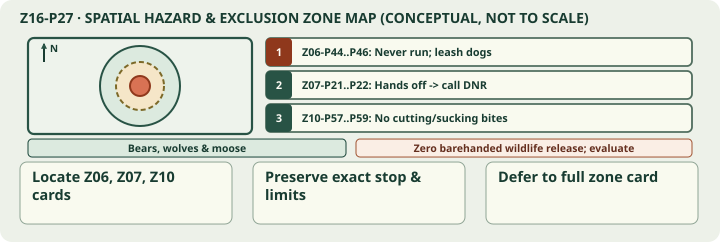

Z16-P27 · Field reference atlas · New manuscript
Wildlife Encounter, Zoonosis and Rabies Prevention Index
Locate the original encyclopedia cards for wildlife Encounter, Zoonosis and Rabies Prevention Index.
When it applies · Offline reference lookup. The linked chapter defines the situation, audience and limits.
Equipment · Offline reader or the complete linked source cards in print.

Actions
- Open Z06-P44 for black Bear Encounter Avoidance and Attractant Control; Z06-P45 for gray Wolf Legal Protection and Safe Encounter Boundaries; Z06-P41 for tularemia Precautions with Wild Rabbits, Hares and Rodents.[A10, H12, H13, H11]
- Open Z10-P59 for clean mammal bites thoroughly and arrange prompt infection and rabies review; Z10-P60 for treat indoor bat encounters as potential rabies exposures requiring public-health review; Z07-P22 for rabies, Bite and Claw Trauma Risks with Distressed Wildlife.[A10, M12, L06]
- Read the linked card’s applicability, equipment and stop conditions together. Keep review and source limitations attached to any excerpt.[A10, ED]
Failure recognition · Acting on a keyword or title while overlooking an upstream exception or stop condition.[A10, ED]
Verify · Confirm the exact page ID and read the full conditions before using the reference.[A10, ED]
Stop or change course · If the situation falls outside a linked card’s conditions or its stop rule applies, stop using this index as a decision aid. Follow the full card and current local directions.[A10, ED]
Evidence and editorial notes
- A10 · FEMA / Ready.gov · Make a Plan (current web edition)
- Section: Offline reader navigation, historical lineage, and HOLD transparency · Conditions: Using the complete 16-zone offline archive, zone readers, and print proofs
Support: Navigation aids expose draft status, reconstruction lineage, open diagnostic photo needs, and pending specialist holds on every lookup path.
Limitations: This index entry does not independently establish any safety, regulatory or diagnostic instruction. · Conflicting evidence: None noted.
Editorial note: Index design and cross-reference policy. Substantive directions come from linked upstream chapter claims. · Specialist reviewer: Accessibility, print QA, and editorial reviewer
Primary source · checked 2026-11-24 - H11 · CDC · About Tularemia and Wild Rabbit / Game Handling Precautions (2024)
- Section: Tularemia precautions with wild rabbits, hares, and rodents · Conditions: Field handling of small game and carcasses
Support: Wear impervious gloves when handling wild rabbits/rodents, avoid sick or sluggish animals, and cook meat thoroughly; bacteria can enter through skin breaks or aerosols.
Limitations: Do not handle found-dead wildlife; seek medical evaluation promptly for fever or skin ulcers after exposure. · Conflicting evidence: None noted.
Editorial note: Critical Z06 small-game zoonosis safety gate. · Specialist reviewer: Infectious-disease specialist
Primary source · checked 2026-11-25 - H12 · Minnesota DNR · Living with Black Bears and Encounter Safety (Current web edition)
- Section: Black bear encounter avoidance and attractant control · Conditions: Campsites, fishing shores, and trails in bear range
Support: Store food, fish waste, and scented items securely; make calm noise in thick cover, back away slowly without running, and never approach cubs.
Limitations: Bear behavior varies with habituation and food stress; carry and know local bear-deterrent rules where appropriate. · Conflicting evidence: None noted.
Editorial note: Core Z06 wildlife encounter avoidance. · Specialist reviewer: Wildlife conflict specialist
Primary source · checked 2026-11-25 - H13 · Minnesota DNR · Gray Wolves in Minnesota: Safety and Legal Protection (Current web edition)
- Section: Gray wolf legal status and encounter guidance · Conditions: Northern Minnesota wolf range
Support: Gray wolves are legally protected in Minnesota under federal/state status; maintain distance, keep pets leashed, secure attractants, and report bold behavior to DNR.
Limitations: Never feed, approach, or attempt to harass protected predators; verify current legal status before any assumption. · Conflicting evidence: None noted.
Editorial note: Protects endangered/managed carnivores and bystanders. · Specialist reviewer: Wildlife biologist and legal reviewer
Primary source · checked 2026-11-25 - L06 · Minnesota DNR · Injured, Orphaned, or Trapped Wildlife Reporting (Current web edition)
- Section: Reporting injured, orphaned, or accidentally trapped wildlife · Conditions: Discovering a trapped or injured wild animal in the field
Support: Maintain safe distance to avoid bites, rabies, and stress to the animal; note GPS/location and contact a Conservation Officer or licensed wildlife rehabilitator.
Limitations: Never attempt barehanded release of distressed carnivores, raptors, or large mammals. · Conflicting evidence: None noted.
Editorial note: Establishes Z07 incidental-capture reporting protocol. · Specialist reviewer: Wildlife rehabilitator and DNR officer
Primary source · checked 2026-11-25 - M12 · NIH / MedlinePlus · Animal Bites (current web edition)
- Section: Animal Bites, Rabies Exposure, and Wound Infection · Conditions: Wild or domestic mammal bites or scratches breaking skin
Support: Wash bite wounds promptly with soap and clean running water, control bleeding, and obtain prompt medical evaluation for infection risk, tetanus status, and rabies post-exposure assessment.
Limitations: Bat encounters in sleeping areas can cause unrecognized bites requiring public-health rabies consultation. · Conflicting evidence: None; aligns with CDC rabies guidance.
Editorial note: Anchors mammal-bite hygiene and public-health rabies referral. · Specialist reviewer: Infectious disease and emergency medicine
Primary source · checked 2026-11-24
Source lineage · New manuscript (Z16 P20 hazard index) · Classification · New manuscript.